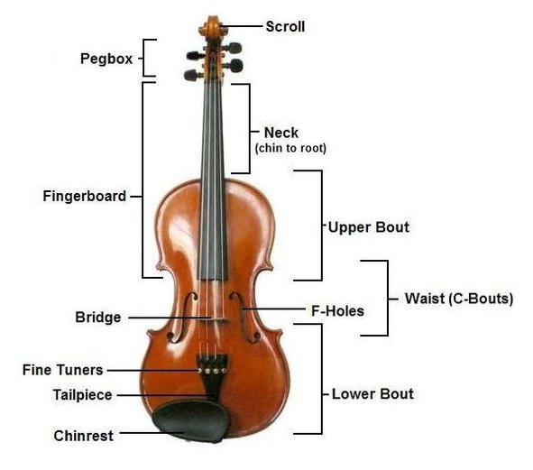

The Violin
The violin is a string instrument (part of the family including violas, celli, and basses) that has been in existence since the early 16th Century. Violins are made of wood, with metal strings. It is has four strings that are tuned in perfect fifths (G3, D4, A4, E5). The violin is most commonly played with a bow, but it sometimes plucked (pizzicato). Violins are often the voice of an orchestra and carry the melody. In orchestras, there are usually two violin sections, the first violins and the second violins. They either sit next to each other on stage right, or sometimes the second violins will sit where the celli normally do, on stage left.
Jokes
How many second violinists does it take to change a lightbulb?
None. They can't reach that high.